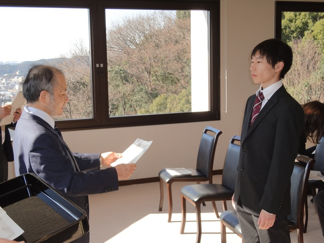
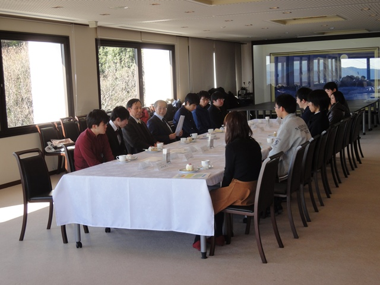

|
表彰式の様子
|
|

|
2015年度のベストリーダー賞表彰式を、平成28年1月20日（水）10:30〜、岡山理科大学11号館８階ラウンジにて開催しました。
当日は、欠席者6名を除く受賞者12名が参加し、山本英二図書館長より、表彰状と副賞の図書カードが授与されました。
大賞では、理工系１位及び人文・社会化学の３位を情報工学科の高野恵輔君がＷ受賞しました。
高野君は３年前に、新人賞の理工系分野３位を受賞しています。文学分野１位の廣本君と同３位の松本君も新人賞受賞者です。
新人賞は、理工系２位と人文・社会科学の１位を応用数学科の碓井亮一君がＷ受賞しました。
|
表彰式後、ベストリーダー賞受賞者と、図書館職員との懇談会を行い、受賞の感想や図書館への要望などが談義されました。
|

|
| 大賞受賞者の感想 |
|
理工系1位
人文・社会科学3位
高野 恵輔
|
Q 受賞しての感想
A また、この賞を受賞できてうれしく思います。
しかも２つも入賞しているとは思ってませんでした。
Q 受賞の秘訣は？
A 気になったタイトルはまず借りてみる。
|
|
文学1位
廣本 拓也
|
Q 受賞してのご感想は？
A とくに気にしていなかったので、受賞に驚いている。
Q 受賞の秘訣は？
A 電車内の暇な時間、本を読むこと。
|
| 大賞受賞者の推薦本 |
|---|
| 書名 | 推薦の理由 |
|---|
ディジタル回路設計とコンピュータアーキテクチャ
|
コンピュータアーキテクチャ初学者にもわかりやすく書かれていて、実際にプロセッサを作ることで深いところの知識も習得できる1冊。
|
戸田新細菌学
|
私個人としては、微生物学を学ぶ上で教科書とは別に読んでみても面白い本だなと感じたからです。
|
物理のための数学
|
初学者でも取り組める内容でありながら、きちんと学ぶことで大学院入試レベルの問題も解けるようになります。
|
すばらしく実力がつく！シリーズ
|
非常に簡潔にまとまっている。 |
やってみよう化学：化学で楽しむ科学のシリーズ
|
化学って難しいと考える方は少なくないと思います。この本は、家庭でもできる小学校でやった自由研究のようなものが豊富です。ぜひ化学のおもしろさ、奥深さを感じてもらいたいので、おすすめします。
|
空想科学読本
|
マンガ、アニメ、小説などに出てくる理論を実際にある理論にあてはめて考えてみている本。
おもしろおかしく書かれているが、理論は本物なので、勉強になる。
|
誘拐
|
登場人物がそれぞれの立場でがんばるところです。 |
シアター / 有川 浩
|
キャラクターが面白い。 |
スイッチを押すとき / 山田 悠介
|
割と古いタイトルですが、読んでいると生きたいという思いと、次々とおとずれる非情な運命に、とてもしんみりとした気持ちになるため。
|
| 新人賞受賞者の感想 |
|
人文・社会科学2位
浅賀 透江
|
Q 受賞してのご感想は？
A そこまで多くの本を借りている自覚がなかったので、大変驚きました。
私が借りていた本の多くは、英語の授業で課題に使用する多読の本がほとんどでした。また、教育について調べるために、何冊か借りたぐらいしか心当たりがないので、本当にびっくりしています。
Q 受賞の秘訣は？
A 厚い本は借りても全部読みませんでした。必要な部分だけ読んで返却しました。
|
|
文学1位
横田 優斗
|
Q 受賞してのご感想は？
A いつの間にか、たくさんの本を借りていたんだなと思った。
Q 受賞の秘訣は？
A 図書館に行くようにすること。
|
| 新人賞受賞者の推薦本 |
|---|
| 署名 | 推薦の理由 |
|---|
| グラウンドの空 / あさの あつこ |
中学生という思春期の中で、複雑な思い葛藤に悩まされるも、前に進もうとする姿が伝わってくる話で、共感できる点が多く、読みやすいと思ったからです。 |
| 生徒会の一存 |
日常で笑えて面白いと思ったからです。
|
| ろまん燈籠 / 太宰 治 |
「人間失格」などの暗いイメージの太宰治ですが、「ろまん燈籠」は、小説が好きな5人の兄弟が順番に「話」を書き継いでいくという陽気な内容に驚くこと間違い無しです。 |
| 少女不十分 / 西尾 維新 |
西尾維新さんの独特な言い回しや、登場人物の思いもよらない行動に驚かされ、次の展開がまったく読めず本に引き込まれるから。 |
| 理科大学図書館の良さと利用した印象 |
・気軽に行けて、気軽に本が借りられる。
・私は主に専門書を利用することが多かったのですが、その際、様々な分野の本が充実していてとても助かりました。また、学生希望図書という制度も私たち学生にとって、嬉しいものであると思います。
・自分から積極的に動けば、あらゆる知識が得られるとともに、自らの世界観を広げてくれる場所だと思います。
・土日もあいているところ。
・レポートを助けてくれる場所。
・利用者が少ないところ。
・気軽に入れて、静かなところ。
・暇なときに、気軽に時間をつぶせる場所。
・11号館の手軽にかつ多くの専門書を読めることには、すごく助かっています。理大という理系ならではだと思います。
・調べたい物を調べられ、面白い本が無いかと新しい分野の本を探せる場所。
・行くのがめんどくさい場所。それでも行きたい場所。
・閲覧席が多く、広いところです。ゆったりと座れて隣の席の人との距離が近すぎることがないので、のびのびと集中できます。
・夏は涼しく、冬は暖かく本を読んだり勉強したりする上で、校内のテーブルや自宅よりも居心地が良くて1人で静香の集中できる場所です。
・広い学習スペースがあるところ。
・大学内で気軽に行ける場所。
・高校にはなかった専門書などもあったりと、十分可能性がある場所だと思います。
|